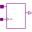
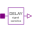
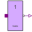
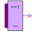
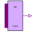
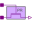
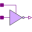

InertialDelaySensitiveProvide the input as output if it holds its value for a specific amount of time |
Information
This information is part of the Modelica Standard Library maintained by the Modelica Association.
Provides the input as output delayed by Tdel if the input holds its value for a longer time than Tdel.
If the time is less than Tdel the initial value y0 holds.
The delay Tdel depends on the values of the signal change. To calculate Tdel, the DelayTable specified in
Digital.Tables is used. If the corresponding value is 1, then tLH is used, if it is -1, then tHL
is used, if it is zero, the input is not delayed.
Parameters (3)
Connectors (2)
| x |
Type: DigitalInput Description: Connector of Digital input signal |
|
|---|---|---|
| y |
Type: DigitalOutput Description: Connector of Digital output signal |
Used in Components (19)
|  |
Modelica.Electrical.Digital.Interfaces Base model for memory elements |
|  |
Modelica.Electrical.Digital.Delay Delay of a vector of digital signals |
|  |
Modelica.Electrical.Digital.Gates InvGate with 1 input value, composed by Not and sensitive inertial delay |
|
Modelica.Electrical.Digital.Gates AndGate with multiple input |
|
|
Modelica.Electrical.Digital.Gates NandGate with multiple input |
|
|  |
Modelica.Electrical.Digital.Gates OrGate with multiple input |
|
Modelica.Electrical.Digital.Gates NorGate with multiple input |
|
|
Modelica.Electrical.Digital.Gates XorGate with multiple input |
|
|  |
Modelica.Electrical.Digital.Gates XnorGate with multiple input |
|
Modelica.Electrical.Digital.Gates BufGate with 1 input value, composed by Not and sensitive inertial delay |
|
|
Modelica.Electrical.Digital.Tristates Transfergate with enable active high |
|
|
Modelica.Electrical.Digital.Tristates Transfergate with enable active high. Output strength reduced. |
|
|
Modelica.Electrical.Digital.Tristates Transfergate with enable active low |
|
|  |
Modelica.Electrical.Digital.Tristates Transfergate with enable active low. Output strength reduced. |
|
Modelica.Electrical.Digital.Tristates Tristate buffer with enable active high |
|
|
Modelica.Electrical.Digital.Tristates Tristate buffer with enable active low |
|
|  |
Modelica.Electrical.Digital.Tristates Tristate Inverter with enable active high |
|
Modelica.Electrical.Digital.Tristates Tristate inverter with enable active low |
|
|
Modelica.Electrical.Digital.Multiplexers A two inputs MULTIPLEXER for multiple value logic (2 data inputs, 1 select input, 1 output) |